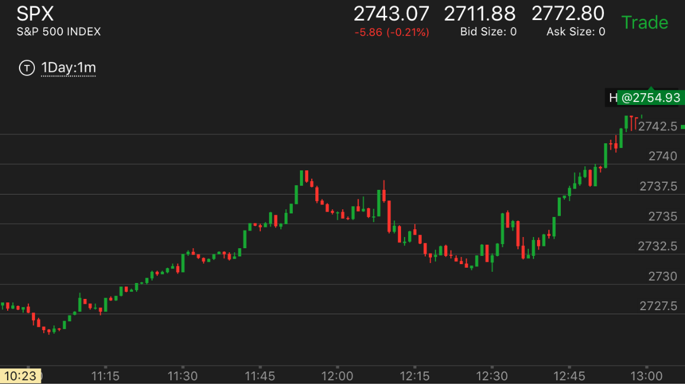

关键点理论和跨越关键点的方式
- 如果一个走势在开始运动后，每个下跌或者上涨都是不到前面的关键点的，
在某个时刻，它开始跨越关键点。说明大盘已经不在意前面的人是否要逃跑了。
这时大盘至少是部分反转了。有时候是全面反转。
- 一般分为三段，第一段，快速上涨后，拉回，低于关键点，第二段再次上涨，再次拉回。和关键点打平。
第三段，再次上涨，拉回后，刚刚高于关键点，这时，大盘开始大涨，一旦大涨，是一个非常强的涨势。下跌也有类似的例子。
- 还有一种情况，第一段，快速上涨到达关键点。立刻大幅拉回，但是拉回的点比原来高一些。
再次上涨。低于关键点，开始走平。这个很容易被认为是第二段
上涨而以为走势转折了。这个并没有一定好的判断。只能从更大的市场来判断。走平后，它再次快速拉回。
拉回点，比上次拉回又高一些。第三次，它突破关键点，然后大涨，再次快速拉回。这次拉回在关键点上。
然后大幅上涨了。
关键点理论
上涨时候，走出M形状，制造了关键点
在关键点附近反复震荡后大涨
越过关键点后，走势反转
TOP
越过关键点后，走势反转
一个走势在运动的时候，总是不到关键点就继续创走势新低或新高，
而在某个时候，它突破了关键点。这样就反转了。在小走势上，通常也有加速的迹象,这个如果发生在逆势的情况，
那么新低或者新高不比原来的低点或者高点多很多。这样很容易就越过了关键点，造成了反转。

图示：
1. 8:10开始下跌后，每次创走势新低，它都反弹不到前面的低点后，继续走低。
到了9：40，它大幅下跌后，10：30超过了关键点。这样就反转了。仔细观察9：40的底部和8：50上一次创走势新低的
样子。那次立刻就反弹了。而这次却在底部停留了4分钟。这样本身形成了反弹的加速方式。它也造成反转的动力。
就是说，这个是反转的动力，而反转的表现在于突破关键点。但是这个动力是反弹加速，在跌势的情况下，
它只能反弹到前面反弹加速的开始。也就是说，这个走势是8：40开始的，它的样子是，下跌，反弹很大。
再次下跌，反弹没有。所以它的反弹顶点也应该在刚刚超过8：40走势开始的样子。
2. 9：40开始的反弹，每次创走势新高后，都不会低于关键点。11：20，它越过前面高点，但是很快停下来，然后走低。
低于10：40创立的关键点。从高点下跌的情况看，11：20的高点下跌速度低于10：40高点下跌的速度，这样同时也具备加速。
这样上涨走势反转了。
3. 12：00下跌后，它的反弹和11：50下跌后的反弹相比，显得很弱。这样就造成了再次反转。但是这个反转也只能是部分反转。

图示：7：40从高点下跌，每次都跨越关键点，再次下跌。到了8：20，它再次走低，
但是很小，就反弹，然后走平。和8：00出现走势新低相比，8:20走低，但是又回到了关键点，而它反弹的幅度很小，
出现了反弹加速。这样就反转了。而它本身处于升势，所以一定会大涨的。
TOP
在关键点附近反复震荡后大涨

图示：开盘后下跌，这个开盘点成为了关键点。
它跨越走平点，两段下跌后，反转，
它反转的时候，在关键点2954反复拉锯。最后突破2954后，拉回在2954后，大涨。如果可以意识到这个点，
那么就可以知道7：45不是一个顶部，而是要继续大涨。

图示：大盘在6：45开始下跌后，每个反弹都低于前面的关键点。
直到8：20，它的反弹高于2822这个关键点，说明大盘反转了。应该做多。

图示:
1。开盘后，三个bar，下跌。这个可以看作是一个非常小的两段下跌走势。因为这个和连续下跌不同。第二个bar是停顿了一下的。
不过这个不能说明什么问题。然后大盘开始上涨，越过开盘高点后，立刻拉回，低于开盘高点。这个开盘高点就是关键点。
再次冲高。再次拉回。这时它刚刚高于开盘点。再次冲高。这次冲高在高处时间比较久。再次下来后，是个两段走势。
再次停留在开盘的关键点。这时可以分析，它不断的跨越开盘高点，不断的拉回。不是一个两段走势见顶的样子。而它上涨如此艰难。
时间很长。上涨花了40分钟的时间。而下跌只用了3分钟。说明未来要大涨。

图示:
关键点是2934. 12:30开始第一浪上涨，大幅拉回后，再次上涨，这次稍微低于前面的高点。再次拉回。再次突破关键点
2934后，快速拉回。恰好停在2934.这时就开始大幅上涨了。从相对论也可以分析出来2934下跌只用了4分钟，而上涨用了7，8分钟，
还没有上涨到原来的位置。12：33下跌的时候，在底部停留了2分钟，更加表示这个是真的下跌，而不是拉回的下跌。

图示:
1。8：20连续下跌，速度并不快，但是是连续下跌。它的反弹一开始很快，然后走平，或者拉回。很久时间也没有离开2845这个下跌的关键点。
说明会大涨。它在这里的时间也远远多于下跌的时间。

图示:开盘后，走平，然后快速下跌。它的反弹速度也不慢。但是还是比下跌的慢。它冲高后，立刻拉回，
再次冲高，再次拉回。第二次拉回稍微高于开盘的走平点。这么长时间，都在开盘走平点震荡。higher high说明腰涨，而上涨时间很长，
也说明了会继续上涨。

图示：2:20出现了三段下跌转折。它开始反弹的时候，始终在2404这个关键点附近打转。在这里徘徊了很久。
这个说明了一个升势的开始。一旦爆发就，不会轻易结束。所以应该紧紧拿住

图示：前面下跌的时候，不断反弹。11：40下跌后，反弹很小。基本走平，然后冲高后，下跌。
然后出现了缓慢的上涨，不断拉回的走势。12：00的下跌只用了3分钟。而且它超过2809这个点，用了10分钟。所以它会大涨。
上涨时候，走出M形状，制造了关键点

图示：11:30出现了M形状，这个形状本身就意味着要继续涨。
然而它在大盘快速回调的时候，却成了一个支撑点。大盘到了这里就两段走势结束。然后开始大涨。